Julia Installation and Testing
WindowsMac
Implementation
WINDOWS
Julia is only available for Windows 7 or later for both 32 and 64 bit versions
- Type Download Julia into your search engine. 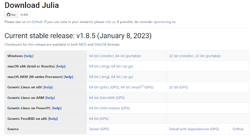
- Click either 32-bit or 64-bit download for windows, depending on your computer size.
*Note: 64-bit download will only work with 64 bit computers.
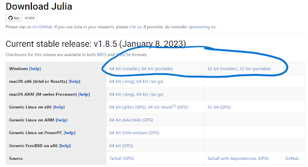
- Click the new download (shown below).
- Hit Next
- Make sure the “Add Julia to PATH” checkbox is checked then hit Next 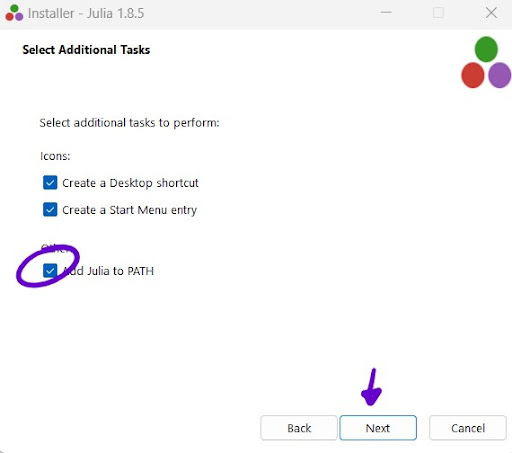
- Check finish box 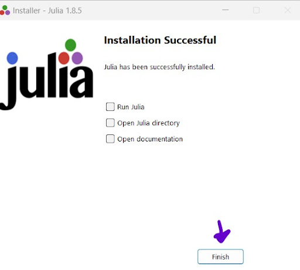
 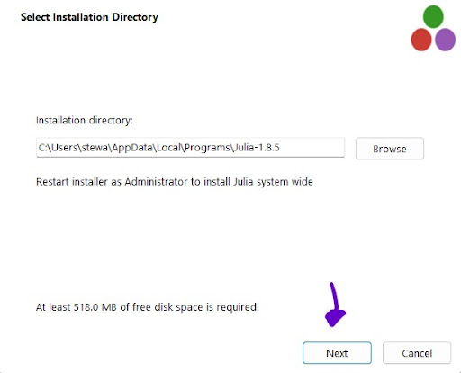
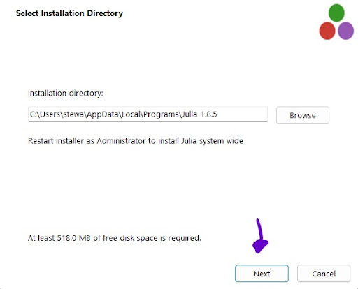
MAC
For macOS 10.9 Mavericks or later releases.
- Type Download Julia into your search engine.
- Click 64-bit download for macOS 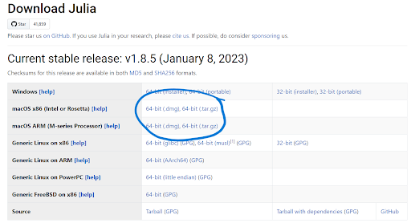
- Find julia-1.8.5-mac64.dmg file in folder
- Drag file to Applications Folder
SETUP/TEST
Note: Julia can be run either in your terminal or on the Julia app. The layout is the exact same.
TO OPEN TERMINAL
- Search “terminal” in search bar/applications 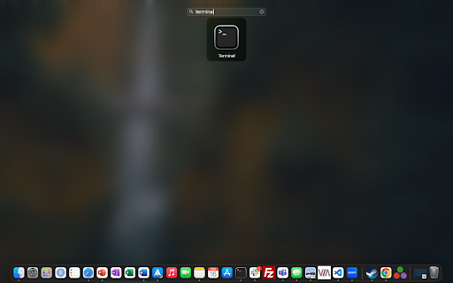 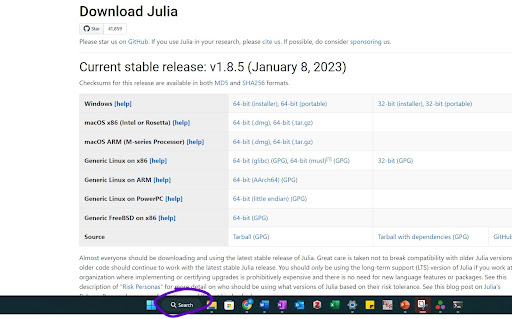
- Type “julia” and hit ENTER. This screen should pop up 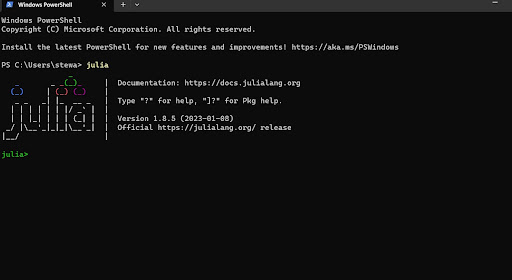
- Type println(“Hello World”)
The command line should output .
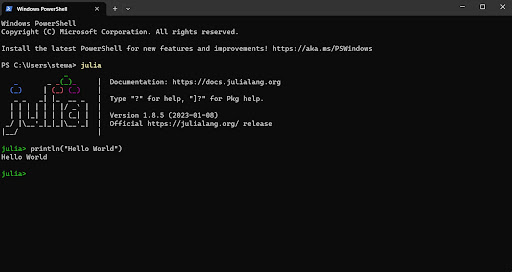
Hello World
Congrats, you have successfully installed the Julia Program! For additional documentation and syntax help, visit me.
Fill out Instruction Evaluation when finished!
TO UNINSTALL
- Open applications folder
- Go to Julia App Settings
- Click Uninstall